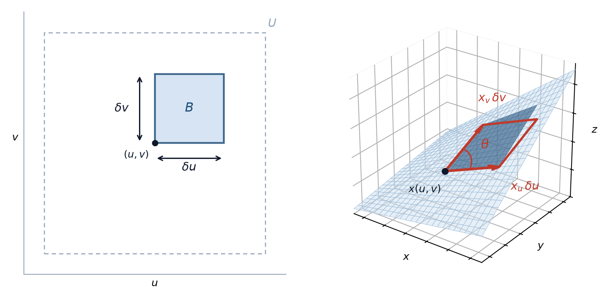
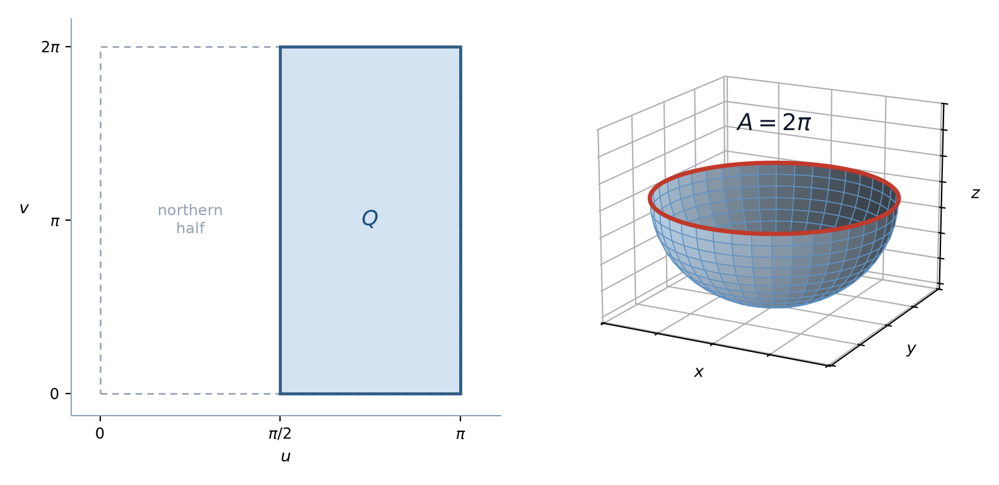

7 תרגול 7: התבנית היסודית הראשונה
7.1 התבנית היסודית הראשונה
בתרגול הקודם הגדרנו משטח רגולרי ואת המישור המשיק לו. בעזרת התבנית היסודית הראשונה של משטח ניתן לחקור תכונות פנימיות של המשטח, למשל אורכי עקומות, זוויות בין עקומות ושטחים, מבלי להתחשב באופן שבו הוא משוכן במרחב \(\mathbb{R}^3\).
הגדרה 7.1.1 — התבנית היסודית הראשונה.
יהי \(S\) משטח רגולרי ותהי \(\overline{x} \left( u, v \right)\) פרמטריזציה מקומית. התבנית היסודית הראשונה מוגדרת כתבנית בילינארית על המרחב \(T_p \left( S \right)\).
פורמלית, תהי \(p \in S\) נקודה על המשטח. התבנית היסודית בנקודה \(p\) היא ההעתקה \[,I : T_p \left( S \right) \times T_p \left( S \right) \to \mathbb{R}\] ומוגדרת על ידי המכפלה הסקלרית על המרחב המשיק \[,I \left( u, v \right) = \left\langle u, v \right\rangle\] כאשר \(u, v \in T_p \left( S \right)\).
הגדרה 7.1.2 — מקדמי המטריקה.
אם \(w = a \overline{x}_u + b \overline{x}_v \in T_p \left( S \right)\), אזי \[.I \left( w \right) = I \left( w, w \right) = \left\| w \right\|^2 = a^2 \left\langle \overline{x}_u, \overline{x}_u \right\rangle + 2ab \left\langle \overline{x}_u, \overline{x}_v \right\rangle + b^2 \left\langle \overline{x}_v, \overline{x}_v \right\rangle\]
אם נסמן \[,g_{11} = \left\langle \overline{x}_u, \overline{x}_u \right\rangle, \qquad g_{12} = g_{21} = \left\langle \overline{x}_u, \overline{x}_v \right\rangle, \qquad g_{22} = \left\langle \overline{x}_v, \overline{x}_v \right\rangle\] נוכל לבטא את התבנית הריבועית באופן הבא: \[.I \left( w \right) = a^2 g_{11} + 2ab g_{12} + b^2 g_{22}\]
הגדרה 7.1.3 — המטריקה הרימנית.
ניתן להציג את התבנית היסודית הראשונה בעזרת מטריצה \[,\left( g_{ij} \right) = \begin{pmatrix} g_{11} & g_{12} \\ g_{21} & g_{22} \end{pmatrix} = \begin{pmatrix} \left\langle \overline{x}_u, \overline{x}_u \right\rangle & \left\langle \overline{x}_u, \overline{x}_v \right\rangle \\ \left\langle \overline{x}_v, \overline{x}_u \right\rangle & \left\langle \overline{x}_v, \overline{x}_v \right\rangle \end{pmatrix}\] כאשר \(\left( g_{ij} \right)\) היא מטריצת גרם.
טענה 7.1.4 — הדטרמיננטה של המטריקה.
מתקיים \[,\det \left( g_{ij} \right) = g_{11} g_{22} - g_{12}^2 = \left\| \overline{x}_u \times \overline{x}_v \right\|^2 > 0\] וזאת לפי זהות לגראנז’ \(\left\| a \times b \right\|^2 = \left\| a \right\|^2 \left\| b \right\|^2 - \left\langle a, b \right\rangle^2\) שראינו בתרגול 4.
מכאן שהמטריצה הפיכה. נסמן את ההופכית שלה ב-\(\left( g^{ij} \right)\), ולכן \[.g^{ij} \cdot g_{jk} = \delta^i_k\]
הגדרה 7.1.5 — הצגה נוספת של התבנית.
דרך נוספת להציג את התבנית היסודית הראשונה היא \[.ds^2 = g_{11} du^2 + 2 g_{12} \, du \, dv + g_{22} dv^2\]
אם \(\gamma \left( t \right) = \overline{x} \left( u \left( t \right), v \left( t \right) \right)\) היא עקומה על המשטח ו-\(s\) הוא פרמטר אורך הקשת שלה, אזי \[.\left( \frac{ds}{dt} \right)^2 = \left\| \gamma' \left( t \right) \right\|^2 = g_{11} \left( \frac{du}{dt} \right)^2 + 2 g_{12} \frac{du}{dt} \frac{dv}{dt} + g_{22} \left( \frac{dv}{dt} \right)^2\]
7.1.1 שימושים של התבנית היסודית הראשונה
התבנית הזו מכילה את כל המידע הנדרש למדידות על המשטח.
משפט 7.1.6 — חישוב אורך של עקומה על המשטח.
תהי \(\gamma \left( t \right) = \overline{x} \left( \alpha^1 \left( t \right), \alpha^2 \left( t \right) \right)\) עקומה על המשטח, ונניח ש-\(t \in \left[ a, b \right]\). האורך של העקומה נתון על ידי \[.L = \int_a^b \left\| \frac{d}{dt} \gamma \left( t \right) \right\| dt = \int_a^b \sqrt{ \left( \alpha^i \right)' \cdot \left( \alpha^j \right)' g_{ij} } \, dt\]
משפט 7.1.7 — חישוב זווית בין שתי עקומות.
אם שתי עקומות נחתכות בנקודה \(p_0\) עם וקטורים משיקים \(w_1 = \left( a_1, b_1 \right)\) ו-\(w_2 = \left( a_2, b_2 \right)\) בבסיס \(\left\{ \overline{x}_u, \overline{x}_v \right\}\), ניתן לחשב את הזווית \(\theta\) ביניהם לפי הנוסחה \[.\cos \left( \theta \right) = \frac{\left\langle w_1, w_2 \right\rangle}{\left\| w_1 \right\| \cdot \left\| w_2 \right\|} = \frac{g_{11} a_1 a_2 + g_{12} \left( a_1 b_2 + a_2 b_1 \right) + g_{22} b_1 b_2}{\sqrt{g_{11} a_1^2 + 2 g_{12} a_1 b_1 + g_{22} b_1^2} \cdot \sqrt{g_{11} a_2^2 + 2 g_{12} a_2 b_2 + g_{22} b_2^2}}\]
משפט 7.1.8 — חישוב שטחים.
יהי \(R \subset S\) תחום חסום על משטח רגולרי שמוכל ב-\(\overline{x} \left( U \right)\), כאשר \(\overline{x} : U \subset \mathbb{R}^2 \to S\), ויהי \(Q = \overline{x}^{-1} \left( R \right)\). אזי \[.\iint_Q \left\| \overline{x}_u \times \overline{x}_v \right\| \, du \, dv = \iint_Q \sqrt{\det \left( g_{ij} \right)} \, du \, dv = A \left( R \right)\]
הביטוי \(A \left( R \right)\) נקרא השטח של \(R\), והביטוי \[dA = \sqrt{\det \left( g_{ij} \right)} \, du \, dv\] נקרא אלמנט שטח.
הערה 7.1.9 — השטח אינו תלוי בפרמטריזציה.
האינטגרל שבנוסחת השטח אינו תלוי בפרמטריזציה. אם \(\overline{x}\) ו-\(\overline{\overline{x}}\) הן שתי פרמטריזציות שונות של אותו תחום, המעבר ביניהן מתבצע על ידי היעקוביאן של שינוי הקואורדינטות, והוא בדיוק הגורם שמתקן את אלמנט השטח.
כדי לראות מהיכן מגיעה הנוסחה, נתבונן במלבן קטן במישור הפרמטרים שצלעותיו \(du\) ו-\(dv\). התמונה שלו על המשטח קרובה למקבילית הנפרשת על ידי הוקטורים \(\overline{x}_u \, du\) ו-\(\overline{x}_v \, dv\), ושטח המקבילית הזו הוא \[,\left\| \overline{x}_u \times \overline{x}_v \right\| \, du \, dv = \left\| \overline{x}_u \right\| \left\| \overline{x}_v \right\| \sin \theta \, du \, dv\] כאשר \(\theta\) היא הזווית בין שני הוקטורים. אכן, לפי טענה 7.1.4 מתקיים \[,\det \left( g_{ij} \right) = \left\| \overline{x}_u \right\|^2 \left\| \overline{x}_v \right\|^2 - \left\langle \overline{x}_u, \overline{x}_v \right\rangle^2 = \left\| \overline{x}_u \right\|^2 \left\| \overline{x}_v \right\|^2 \sin^2 \theta\] ולכן שטח המקבילית הוא בדיוק \(\sqrt{\det \left( g_{ij} \right)} \, du \, dv\). סכימה על כל המלבנים הקטנים, במעבר לגבול, נותנת את האינטגרל שבנוסחה.

טענה 7.1.10 — התבנית היסודית של משטח סיבוב.
עבור משטח סיבוב \(\overline{x} \left( u, v \right) = \left( f \left( u \right) \cos v, f \left( u \right) \sin v, g \left( u \right) \right)\) מתקיים \[,g_{11} = \left( f' \left( u \right) \right)^2 + \left( g' \left( u \right) \right)^2 = \left\| \gamma' \left( u \right) \right\|^2, \qquad g_{12} = g_{21} = 0, \qquad g_{22} = f^2 \left( u \right)\] כלומר \[,\left( g_{ij} \right) = \begin{pmatrix} \left( f' \right)^2 + \left( g' \right)^2 & 0 \\ 0 & f^2 \end{pmatrix}\] והמטריקה היא \[.ds^2 = \left( \left( f' \right)^2 + \left( g' \right)^2 \right) du^2 + f^2 dv^2\]
מסקנה 7.1.11 — מקרה פרטי: פרמטריזציה טבעית.
אם \(\gamma \left( s \right)\) היא עקומה נתונה בפרמטריזציה טבעית, אזי \(\left\| \gamma' \left( s \right) \right\|^2 = 1\), ולכן \[,\left( g_{ij} \right) = \begin{pmatrix} 1 & 0 \\ 0 & f^2 \end{pmatrix}\] ואז \[.ds^2 = du^2 + f^2 dv^2\]
מסקנה 7.1.12 — הזווית בין עקומות הקואורדינטות.
נחשב את הזווית בין שתי משפחות עקומות הקואורדינטות שהגדרנו בתרגול 6. וקטורי המשיק הם \(\overline{x}_u\) ו-\(\overline{x}_v\), ולכן לפי משפט 7.1.7 \[.\cos \theta = \frac{\left\langle \overline{x}_u, \overline{x}_v \right\rangle}{\left\| \overline{x}_u \right\| \left\| \overline{x}_v \right\|} = \frac{g_{12}}{\sqrt{g_{11} g_{22}}}\]
מכאן מסקנה שימושית: עקומות הקואורדינטות ניצבות זו לזו בכל נקודה אם ורק אם \(g_{12} = 0\).
תרגילים
שאלה 7.1.13.
חשבו את התבנית היסודית הראשונה של
- המישור, בפרמטריזציה \(\overline{x} \left( u, v \right) = \left( u, v, 0 \right)\).
- הגליל ברדיוס \(R\), בפרמטריזציה \(\overline{x} \left( u, v \right) = \left( R \cos v, \; R \sin v, \; u \right)\).
מה אפשר להסיק מהשוואת השתיים?
פתרון.
סעיף 1: המישור
נגזור לפי כל אחד מן המשתנים. הרכיב השלישי קבוע ולכן נגזרתו מתאפסת, ומתקבל \[.\overline{x}_u = \left( 1, 0, 0 \right), \qquad \overline{x}_v = \left( 0, 1, 0 \right)\]
נחשב את שלוש המכפלות הסקלריות בנפרד: \[,g_{11} = \left\langle \left( 1, 0, 0 \right), \left( 1, 0, 0 \right) \right\rangle = 1 \cdot 1 + 0 \cdot 0 + 0 \cdot 0 = 1\] וכן \[,g_{12} = \left\langle \left( 1, 0, 0 \right), \left( 0, 1, 0 \right) \right\rangle = 1 \cdot 0 + 0 \cdot 1 + 0 \cdot 0 = 0\] ולבסוף \[.g_{22} = \left\langle \left( 0, 1, 0 \right), \left( 0, 1, 0 \right) \right\rangle = 0 \cdot 0 + 1 \cdot 1 + 0 \cdot 0 = 1\]
לכן \[,\left( g_{ij} \right) = \begin{pmatrix} 1 & 0 \\ 0 & 1 \end{pmatrix}, \qquad ds^2 = du^2 + dv^2\] וזוהי בדיוק משפחת המרחקים האוקלידית המוכרת במישור.
סעיף 2: הגליל
נגזור. לפי \(u\) רק הרכיב השלישי תלוי ב-\(u\), ולפי \(v\) רק שני הראשונים: \[,\overline{x}_u = \left( 0, 0, 1 \right), \qquad \overline{x}_v = \left( -R \sin v, \; R \cos v, \; 0 \right)\]
נחשב: \[,g_{11} = 0^2 + 0^2 + 1^2 = 1\] וכן \[,g_{12} = 0 \cdot \left( -R \sin v \right) + 0 \cdot R \cos v + 1 \cdot 0 = 0\] ולבסוף, תוך שימוש ב-\(\sin^2 v + \cos^2 v = 1\), \[.g_{22} = \left( -R \sin v \right)^2 + \left( R \cos v \right)^2 + 0^2 = R^2 \sin^2 v + R^2 \cos^2 v = R^2 \left( \sin^2 v + \cos^2 v \right) = R^2\]
לכן \[.\left( g_{ij} \right) = \begin{pmatrix} 1 & 0 \\ 0 & R^2 \end{pmatrix}, \qquad ds^2 = du^2 + R^2 dv^2\]
אפשר היה לקצר: הגליל הוא משטח סיבוב עם \(f \left( u \right) = R\) ו-\(g \left( u \right) = u\), ולכן לפי טענה 7.1.10 מתקבל \(g_{11} = 0^2 + 1^2 = 1\) ו-\(g_{22} = f^2 = R^2\).
מסקנה: המישור והגליל
עבור \(R = 1\) מתקבלת בגליל בדיוק אותה מטריצה כמו במישור. במקרה כזה נאמר שהמשטחים איזומטריים, וזה נכון כי אפשר לפרוש גליל למישור מבלי למתוח אותו או לקרוע אותו.
גם עבור \(R \neq 1\) אין הבדל מהותי: ההצבה \(\widetilde{v} = R v\) נותנת \(ds^2 = du^2 + d\widetilde{v}^2\), כלומר שוב המטריקה של המישור.
שאלה 7.1.14.
חשבו את התבנית היסודית הראשונה של ספירת היחידה בקואורדינטות ספיריות \[.\overline{x} \left( u, v \right) = \left( \sin u \cos v, \; \sin u \sin v, \; \cos u \right)\] היכן הפרמטריזציה מפסיקה להיות רגולרית, וכיצד הדבר ניכר במטריקה?
פתרון.
חישוב הנגזרות
נגזור לפי \(u\), כאשר \(v\) קבוע: \[.\overline{x}_u = \left( \cos u \cos v, \; \cos u \sin v, \; -\sin u \right)\]
נגזור לפי \(v\), כאשר \(u\) קבוע. הרכיב השלישי אינו תלוי ב-\(v\) ולכן נגזרתו מתאפסת: \[.\overline{x}_v = \left( -\sin u \sin v, \; \sin u \cos v, \; 0 \right)\]
חישוב מקדמי המטריקה
עבור \(g_{11}\) נפתח ונשתמש פעמיים בזהות הפיתגורית: \[\begin{aligned} g_{11} &= \cos^2 u \cos^2 v + \cos^2 u \sin^2 v + \sin^2 u \\ &= \cos^2 u \left( \cos^2 v + \sin^2 v \right) + \sin^2 u \\ &= \cos^2 u + \sin^2 u = 1. \end{aligned}\]
עבור \(g_{12}\) שני המחוברים הראשונים מבטלים זה את זה: \[\begin{aligned} g_{12} &= \cos u \cos v \cdot \left( -\sin u \sin v \right) + \cos u \sin v \cdot \sin u \cos v + \left( -\sin u \right) \cdot 0 \\ &= -\sin u \cos u \sin v \cos v + \sin u \cos u \sin v \cos v = 0. \end{aligned}\]
ולבסוף \[.g_{22} = \sin^2 u \sin^2 v + \sin^2 u \cos^2 v + 0 = \sin^2 u \left( \sin^2 v + \cos^2 v \right) = \sin^2 u\]
מסקנה והקטבים
קיבלנו \[.\left( g_{ij} \right) = \begin{pmatrix} 1 & 0 \\ 0 & \sin^2 u \end{pmatrix}, \qquad ds^2 = du^2 + \sin^2 u \, dv^2\]
התוצאה עקבית עם מסקנה 7.1.11: הספירה היא משטח סיבוב של חצי המעגל \(\gamma \left( u \right) = \left( \sin u, 0, \cos u \right)\), שהוא בפרמטריזציה טבעית, ו-\(f \left( u \right) = \sin u\).
לפי טענה 7.1.4 הדטרמיננטה היא \(\det \left( g_{ij} \right) = \sin^2 u\), והיא מתאפסת עבור \(u = 0\) ועבור \(u = \pi\). אלה בדיוק שני הקטבים, ושם הפרמטריזציה הספירית אינה רגולרית: כל הערכים של \(v\) נותנים שם את אותה נקודה.
שאלה 7.1.15.
חשבו את התבנית היסודית הראשונה של ההליקואיד \[.\overline{x} \left( u, v \right) = \left( v \cos u, \; v \sin u, \; bu \right)\]
פתרון.
פתרון
נגזור: \[.\overline{x}_u = \left( -v \sin u, \; v \cos u, \; b \right), \qquad \overline{x}_v = \left( \cos u, \; \sin u, \; 0 \right)\]
נחשב את \(g_{11}\): \[.g_{11} = v^2 \sin^2 u + v^2 \cos^2 u + b^2 = v^2 \left( \sin^2 u + \cos^2 u \right) + b^2 = v^2 + b^2\]
נחשב את \(g_{12}\), ושוב שני המחוברים מבטלים זה את זה: \[.g_{12} = -v \sin u \cos u + v \cos u \sin u + b \cdot 0 = 0\]
ולבסוף \[.g_{22} = \cos^2 u + \sin^2 u + 0 = 1\]
לכן \[.\left( g_{ij} \right) = \begin{pmatrix} v^2 + b^2 & 0 \\ 0 & 1 \end{pmatrix}\]
מכיוון ש-\(g_{12} = 0\), לפי מסקנה 7.1.12 הישרים היוצרים ניצבים בכל נקודה לעקומות הקואורדינטות האחרות.
הערה: פרמטריזציה איזותרמית
בפרמטריזציה \[\widetilde{x} \left( u, v \right) = \left( b \sinh v \cos u, \; b \sinh v \sin u, \; bu \right)\] מתקבל \(g_{11} = g_{22} = b^2 \cosh^2 v\) ו-\(g_{12} = 0\). פרמטריזציה שבה \(g_{11} = g_{22}\) ו-\(g_{12} = 0\) נקראת איזותרמית. לפי משפט 7.1.7 פרמטריזציה כזו שומרת על זוויות, שכן נוסחת הזווית מצטמצמת לנוסחה האוקלידית הרגילה במישור הפרמטרים.
שאלה 7.1.16.
יהיו \(a > r > 0\) ויהי הטורוס \[,\overline{x} \left( u, v \right) = \left( \left( a + r \cos u \right) \cos v, \; \left( a + r \cos u \right) \sin v, \; r \sin u \right)\] כאשר \(0 < u < 2\pi\) ו-\(0 < v < 2\pi\). חשבו את התבנית היסודית הראשונה שלו, ובעזרתה את שטח הפנים.
פתרון.
שלב 1: המטריקה
הטורוס הוא משטח סיבוב, המתקבל מסיבוב המעגל \[\gamma \left( u \right) = \left( a + r \cos u, \; 0, \; r \sin u \right)\] סביב ציר \(z\), כלומר \(f \left( u \right) = a + r \cos u\) ו-\(g \left( u \right) = r \sin u\).
נגזור את העקומה היוצרת: \[,\gamma' \left( u \right) = \left( -r \sin u, \; 0, \; r \cos u \right)\] ולכן \[.\left\| \gamma' \left( u \right) \right\|^2 = r^2 \sin^2 u + r^2 \cos^2 u = r^2 \left( \sin^2 u + \cos^2 u \right) = r^2\]
לפי טענה 7.1.10 מתקבל \[.\left( g_{ij} \right) = \begin{pmatrix} r^2 & 0 \\ 0 & \left( a + r \cos u \right)^2 \end{pmatrix}\]
שלב 2: אלמנט השטח
נחשב את הדטרמיננטה. המטריצה אלכסונית, ולכן \[.\det \left( g_{ij} \right) = r^2 \left( a + r \cos u \right)^2\]
מכיוון ש-\(a > r > 0\) מתקיים \(a + r \cos u \geq a - r > 0\), ולכן הביטוי חיובי ואפשר להוציא שורש בלי ערך מוחלט: \[.dA = \sqrt{\det \left( g_{ij} \right)} \, du \, dv = r \left( a + r \cos u \right) du \, dv\]
שלב 3: האינטגרל
נציב בנוסחת השטח ממשפט 7.1.8. המשתנה \(v\) אינו מופיע באינטגרנד, ולכן האינטגרציה עליו נותנת גורם \(2\pi\): \[.A = \int_0^{2\pi} \int_0^{2\pi} r \left( a + r \cos u \right) du \, dv = 2\pi r \int_0^{2\pi} \left( a + r \cos u \right) du\]
נחשב את האינטגרל הפנימי. הקדומה של \(a\) היא \(au\), והקדומה של \(r \cos u\) היא \(r \sin u\): \[.\int_0^{2\pi} \left( a + r \cos u \right) du = \Big[ au + r \sin u \Big]_0^{2\pi} = \left( 2\pi a + r \sin 2\pi \right) - \left( 0 + r \sin 0 \right) = 2\pi a\]
המחובר עם הסינוס התאפס, שכן \(\sin 2\pi = \sin 0 = 0\). נציב ונקבל \[.A = 2\pi r \cdot 2\pi a = 4\pi^2 a r\]
בדיקת שפיות
התוצאה \(4\pi^2 a r = \left( 2\pi a \right) \cdot \left( 2\pi r \right)\) היא בדיוק מכפלת היקפי שני המעגלים: המעגל הגדול ברדיוס \(a\) והמעגל הקטן ברדיוס \(r\). זהו משפט פאפוס, ולפיו שטח משטח סיבוב שווה למכפלת אורך העקומה היוצרת בהיקף המעגל שמתאר מרכז המסה שלה.
שאלה 7.1.17.
חשבו את שטח חצי הכדור הדרומי של ספירת היחידה, בעזרת הפרמטריזציה שלה כמשטח סיבוב.
פתרון.
שלב 1: תחום האינטגרציה
נשתמש בפרמטריזציה ובמטריקה שחישבנו בשאלה 7.1.14, כלומר \[,\overline{x} \left( u, v \right) = \left( \sin u \cos v, \; \sin u \sin v, \; \cos u \right)\] ועבורה \[.\left( g_{ij} \right) = \begin{pmatrix} 1 & 0 \\ 0 & \sin^2 u \end{pmatrix}\]
חצי הכדור הדרומי הוא החלק שבו \(z < 0\). הרכיב השלישי הוא \(z = \cos u\), ולכן התנאי \(z < 0\) מתורגם ל-\(\cos u < 0\), כלומר \[.\frac{\pi}{2} < u < \pi\]
הזווית \(v\) סורקת סיבוב שלם, ולכן \(0 < v < 2\pi\). מכאן שתחום האינטגרציה במישור הפרמטרים הוא המלבן \[.Q = \left( \frac{\pi}{2}, \pi \right) \times \left( 0, 2\pi \right)\]
שלב 2: אלמנט השטח
המטריצה אלכסונית, ולכן \[.\det \left( g_{ij} \right) = 1 \cdot \sin^2 u = \sin^2 u\]
בתחום \(0 < u < \pi\) מתקיים \(\sin u > 0\), ולכן אפשר להוציא שורש בלי ערך מוחלט: \[.dA = \sqrt{\det \left( g_{ij} \right)} \, du \, dv = \sin u \, du \, dv\]
שלב 3: האינטגרל
נציב בנוסחת השטח ממשפט 7.1.8. האינטגרנד אינו תלוי ב-\(v\), ולכן האינטגרציה על \(v\) נותנת גורם \(2\pi\): \[.A = \int_0^{2\pi} \int_{\pi/2}^{\pi} \sin u \, du \, dv = 2\pi \int_{\pi/2}^{\pi} \sin u \, du\]
הקדומה של \(\sin u\) היא \(-\cos u\), ולכן \[.\int_{\pi/2}^{\pi} \sin u \, du = \Big[ -\cos u \Big]_{\pi/2}^{\pi} = \left( -\cos \pi \right) - \left( -\cos \frac{\pi}{2} \right) = 1 - 0 = 1\]
נציב ונקבל \[.A = 2\pi \cdot 1 = 2\pi\]
בדיקת שפיות
שטח הפנים של ספירת היחידה כולה הוא \(4\pi\), וחצי הכדור הדרומי הוא בדיוק מחצית ממנה. אכן \(2\pi = \frac{1}{2} \cdot 4\pi\), כנדרש.
שימו לב שהקוטב הדרומי, המתקבל עבור \(u = \pi\), אינו נמצא בתמונת הפרמטריזציה, וגם המרידיאן \(v = 0\) אינו נמצא בה. אלה קבוצות ממימד נמוך יותר, ולכן אינן תורמות לשטח.

שאלה 7.1.18.
יהי \(z = g \left( u, v \right)\) גרף של פונקציה גזירה, בפרמטריזציה \(\overline{x} \left( u, v \right) = \left( u, v, g \left( u, v \right) \right)\).
- חשבו את התבנית היסודית הראשונה, והראו שאלמנט השטח הוא \[.dA = \sqrt{1 + g_u^2 + g_v^2} \, du \, dv\]
- בעזרת הנוסחה, חשבו את שטח החלק של הפרבולואיד \(z = x^2 + y^2\) שמעל עיגול היחידה \(x^2 + y^2 \leq 1\).
פתרון.
סעיף 1: אלמנט השטח של גרף
נגזור. בכל אחת מן הנגזרות שני הרכיבים הראשונים נותנים \(1\) ו-\(0\) או להפך: \[.\overline{x}_u = \left( 1, 0, g_u \right), \qquad \overline{x}_v = \left( 0, 1, g_v \right)\]
נחשב את שלושת המקדמים: \[,g_{11} = 1^2 + 0^2 + g_u^2 = 1 + g_u^2\] וכן \[,g_{12} = 1 \cdot 0 + 0 \cdot 1 + g_u g_v = g_u g_v\] ולבסוף \[.g_{22} = 0^2 + 1^2 + g_v^2 = 1 + g_v^2\]
נחשב את הדטרמיננטה ונפתח את המכפלה: \[\begin{aligned} \det \left( g_{ij} \right) &= \left( 1 + g_u^2 \right) \left( 1 + g_v^2 \right) - \left( g_u g_v \right)^2 \\ &= 1 + g_v^2 + g_u^2 + g_u^2 g_v^2 - g_u^2 g_v^2 \\ &= 1 + g_u^2 + g_v^2. \end{aligned}\]
שני המחוברים המעורבים ביטלו זה את זה, ולכן \[,dA = \sqrt{\det \left( g_{ij} \right)} \, du \, dv = \sqrt{1 + g_u^2 + g_v^2} \, du \, dv\] כנדרש.
סעיף 2: שלב א, הצבה בנוסחה
כאן \(g \left( u, v \right) = u^2 + v^2\), ולכן \[.g_u = 2u, \qquad g_v = 2v\]
נציב בנוסחה מן הסעיף הקודם: \[.dA = \sqrt{1 + \left( 2u \right)^2 + \left( 2v \right)^2} \, du \, dv = \sqrt{1 + 4u^2 + 4v^2} \, du \, dv\]
תחום האינטגרציה במישור הפרמטרים הוא ההיטל של המשטח על מישור \(xy\), כלומר עיגול היחידה \[.Q = \left\{ \left( u, v \right) : u^2 + v^2 \leq 1 \right\}\]
סעיף 2: שלב ב, מעבר לקואורדינטות קוטביות
התחום עגול והאינטגרנד תלוי רק ב-\(u^2 + v^2\), ולכן נעבור לקואורדינטות קוטביות \[,u = r \cos \varphi, \qquad v = r \sin \varphi, \qquad 0 \leq r \leq 1, \; 0 \leq \varphi \leq 2\pi\] שבהן \(du \, dv = r \, dr \, d\varphi\) וכן \(4u^2 + 4v^2 = 4r^2\). מכאן \[.A = \int_0^{2\pi} \int_0^1 \sqrt{1 + 4r^2} \, r \, dr \, d\varphi\]
האינטגרנד אינו תלוי ב-\(\varphi\), ולכן האינטגרציה עליו נותנת גורם \(2\pi\): \[.A = 2\pi \int_0^1 \sqrt{1 + 4r^2} \, r \, dr\]
סעיף 2: שלב ג, חישוב האינטגרל
נציב \(w = 1 + 4r^2\). אז \(dw = 8r \, dr\), כלומר \(r \, dr = \frac{dw}{8}\), וגבולות האינטגרציה משתנים מ-\(r : 0 \to 1\) ל-\(w : 1 \to 5\). מכאן \[.\int_0^1 \sqrt{1 + 4r^2} \, r \, dr = \int_1^5 \sqrt{w} \cdot \frac{dw}{8} = \frac{1}{8} \cdot \frac{2}{3} \Big[ w^{3/2} \Big]_1^5 = \frac{1}{12} \left( 5^{3/2} - 1 \right)\]
נשתמש ב-\(5^{3/2} = 5 \sqrt{5}\) ונציב: \[.A = 2\pi \cdot \frac{5 \sqrt{5} - 1}{12} = \frac{\pi \left( 5 \sqrt{5} - 1 \right)}{6}\]
בדיקת שפיות
מספרית \(5 \sqrt{5} \approx 11.18\), ולכן \(A \approx \frac{\pi \cdot 10.18}{6} \approx 5.33\).
שטח עיגול היחידה שמתחת למשטח הוא \(\pi \approx 3.14\). הפרבולואיד נמצא מעל העיגול והוא משופע, ולכן מתבקש ששטחו יהיה גדול יותר, וזה אכן המצב. עבור פונקציה קבועה, כלומר \(g_u = g_v = 0\), הנוסחה הייתה נותנת בדיוק את שטח העיגול, שכן אז \(dA = du \, dv\).
שאלה 7.1.19.
יהי \(U = \left\{ \left( u, v \right) \in \mathbb{R}^2 : 0 < u < 1, \; 0 < v < 1 \right\}\) ריבוע היחידה הפתוח, ותהי \(\overline{x} : U \to \mathbb{R}^3\) פרמטריזציה מקומית של משטח \(S\), שמקדמי התבנית היסודית הראשונה שלה הם \[,g_{11} = \frac{1}{u + v} + \frac{1}{\left( 1 - u \right) \left( 1 - v \right)}\] וכן \[,g_{12} = g_{21} = \frac{1}{u + v}\] ולבסוף \[.g_{22} = \frac{1}{u + v} - \frac{1}{\left( 1 + u \right) \left( 1 + v \right)}\]
חשבו את שטח התמונה \(\overline{x} \left( U \right)\).
פתרון.
שלב 1: סימון מקצר
הביטויים מסורבלים, ולכן נסמן \[.a = \frac{1}{u + v}, \qquad b = \frac{1}{\left( 1 - u \right) \left( 1 - v \right)}, \qquad c = \frac{1}{\left( 1 + u \right) \left( 1 + v \right)}\]
בסימונים אלה \[.g_{11} = a + b, \qquad g_{12} = a, \qquad g_{22} = a - c\]
שלב 2: הדטרמיננטה
נפתח את המכפלה: \[\begin{aligned} \det \left( g_{ij} \right) &= \left( a + b \right) \left( a - c \right) - a^2 \\ &= a^2 - ac + ab - bc - a^2 \\ &= a \left( b - c \right) - bc. \end{aligned}\]
המחובר \(a^2\) ביטל את עצמו. נחשב עתה בנפרד את \(b - c\), על ידי מכנה משותף: \[.b - c = \frac{\left( 1 + u \right) \left( 1 + v \right) - \left( 1 - u \right) \left( 1 - v \right)}{\left( 1 - u \right) \left( 1 - v \right) \left( 1 + u \right) \left( 1 + v \right)}\]
נפתח את המונה. שני הביטויים הם \(1 + u + v + uv\) ו-\(1 - u - v + uv\), ובחיסור המחוברים \(1\) ו-\(uv\) מתבטלים: \[.\left( 1 + u + v + uv \right) - \left( 1 - u - v + uv \right) = 2u + 2v = 2 \left( u + v \right)\]
המכנה מצטמצם לפי נוסחת הכפל המקוצר, שכן \(\left( 1 - u \right) \left( 1 + u \right) = 1 - u^2\) וכך גם ב-\(v\): \[.b - c = \frac{2 \left( u + v \right)}{\left( 1 - u^2 \right) \left( 1 - v^2 \right)}\]
שלב 3: הצבה וצמצום
נכפול ב-\(a = \frac{1}{u+v}\). הגורם \(u + v\) מצטמצם: \[.a \left( b - c \right) = \frac{1}{u + v} \cdot \frac{2 \left( u + v \right)}{\left( 1 - u^2 \right) \left( 1 - v^2 \right)} = \frac{2}{\left( 1 - u^2 \right) \left( 1 - v^2 \right)}\]
נחשב גם את \(bc\), ושוב לפי נוסחת הכפל המקוצר: \[.bc = \frac{1}{\left( 1 - u \right) \left( 1 - v \right) \left( 1 + u \right) \left( 1 + v \right)} = \frac{1}{\left( 1 - u^2 \right) \left( 1 - v^2 \right)}\]
נחסר ונקבל \[.\det \left( g_{ij} \right) = \frac{2}{\left( 1 - u^2 \right) \left( 1 - v^2 \right)} - \frac{1}{\left( 1 - u^2 \right) \left( 1 - v^2 \right)} = \frac{1}{\left( 1 - u^2 \right) \left( 1 - v^2 \right)}\]
בריבוע היחידה מתקיים \(0 < u, v < 1\) ולכן שני הגורמים חיוביים, והביטוי אכן חיובי כפי שמובטח בטענה 7.1.4.
שלב 4: האינטגרל
אלמנט השטח מתפרק למכפלה של ביטוי ב-\(u\) בלבד וביטוי ב-\(v\) בלבד: \[.dA = \sqrt{\det \left( g_{ij} \right)} \, du \, dv = \frac{1}{\sqrt{1 - u^2}} \cdot \frac{1}{\sqrt{1 - v^2}} \, du \, dv\]
לכן האינטגרל הכפול מתפרק למכפלת שני אינטגרלים זהים: \[.A = \int_0^1 \int_0^1 \frac{du \, dv}{\sqrt{1 - u^2} \sqrt{1 - v^2}} = \left( \int_0^1 \frac{du}{\sqrt{1 - u^2}} \right)^2\]
הקדומה היא \(\arcsin u\). האינטגרל אינו אמיתי בקצה \(u = 1\), ולכן נחשב אותו כגבול: \[.\int_0^1 \frac{du}{\sqrt{1 - u^2}} = \lim_{\varepsilon \to 0^+} \Big[ \arcsin u \Big]_0^{1 - \varepsilon} = \arcsin 1 - \arcsin 0 = \frac{\pi}{2} - 0 = \frac{\pi}{2}\]
מכאן \[.A = \left( \frac{\pi}{2} \right)^2 = \frac{\pi^2}{4}\]
מה זה ממחיש
לא נאמר בשאלה מהו המשטח \(S\), ולא הייתה לכך שום חשיבות. כל מה שנדרש לחישוב השטח היו מקדמי המטריקה, ובדיוק כמו בחישוב האורך בשאלה 7.1.20, אין צורך לצאת אל המרחב העוטף.
שאלה 7.1.20.
על הגליל ברדיוס \(R\), בפרמטריזציה \(\overline{x} \left( u, v \right) = \left( R \cos v, R \sin v, u \right)\), נתונה העקומה במישור הפרמטרים \[,\alpha \left( t \right) = \left( ct, \; t \right), \qquad t \in \left[ 0, 2\pi \right]\] כאשר \(c > 0\) קבוע. חשבו את אורך העקומה המתאימה על המשטח, פעם בעזרת התבנית היסודית ופעם ישירות ב-\(\mathbb{R}^3\), וּודאו שהתוצאות מתלכדות.
פתרון.
דרך א: בעזרת התבנית היסודית
מן התרגיל הראשון ידוע ש-\(g_{11} = 1\), \(g_{12} = 0\) ו-\(g_{22} = R^2\).
הנגזרת של העקומה במישור הפרמטרים היא \[,\alpha' \left( t \right) = \left( c, 1 \right)\] כלומר \(\left( \alpha^1 \right)' = c\) ו-\(\left( \alpha^2 \right)' = 1\).
נציב בנוסחה ממשפט 7.1.6. הסכום \(\left( \alpha^i \right)' \left( \alpha^j \right)' g_{ij}\) הוא סכום על ארבעה זוגות, אך המחוברים המעורבים מתאפסים שכן \(g_{12} = 0\): \[.\left( \alpha^i \right)' \left( \alpha^j \right)' g_{ij} = c^2 g_{11} + 2 \cdot c \cdot 1 \cdot g_{12} + 1^2 \cdot g_{22} = c^2 \cdot 1 + 0 + R^2 = c^2 + R^2\]
הביטוי אינו תלוי ב-\(t\), ולכן \[.L = \int_0^{2\pi} \sqrt{c^2 + R^2} \, dt = 2\pi \sqrt{c^2 + R^2}\]
דרך ב: ישירות במרחב
נרכיב ונקבל את העקומה במרחב \[.\gamma \left( t \right) = \overline{x} \left( ct, t \right) = \left( R \cos t, \; R \sin t, \; ct \right)\] זהו בדיוק סליל מעגלי.
נגזור: \[,\gamma' \left( t \right) = \left( -R \sin t, \; R \cos t, \; c \right)\] ולכן \[.\left\| \gamma' \left( t \right) \right\| = \sqrt{R^2 \sin^2 t + R^2 \cos^2 t + c^2} = \sqrt{R^2 + c^2}\]
מכאן \[,L = \int_0^{2\pi} \sqrt{R^2 + c^2} \, dt = 2\pi \sqrt{R^2 + c^2}\] וזו בדיוק אותה תוצאה.
מה זה ממחיש
שתי הדרכים נותנות את אותו מספר, וזו בדיוק הנקודה: התבנית היסודית מכילה את כל המידע הדרוש למדידת אורכים, ואין צורך לצאת אל המרחב העוטף כדי לחשב אותם. יצור שחי על המשטח ומכיר רק את \(g_{ij}\) יכול למדוד את האורך הזה בעצמו.
שאלה 7.1.21.
יהי הפרבולואיד ההיפרבולי \(z = xy\) בפרמטריזציה \(\overline{x} \left( u, v \right) = \left( u, v, uv \right)\). חשבו את התבנית היסודית הראשונה, ומצאו את הזווית בין שתי עקומות הקואורדינטות בנקודה \(\left( u, v \right) = \left( 1, 1 \right)\).
פתרון.
שלב 1: המטריקה
זהו גרף של הפונקציה \(g \left( u, v \right) = uv\), ולכן \[.\overline{x}_u = \left( 1, 0, v \right), \qquad \overline{x}_v = \left( 0, 1, u \right)\]
נחשב: \[,g_{11} = 1^2 + 0^2 + v^2 = 1 + v^2\] וכן \[,g_{12} = 1 \cdot 0 + 0 \cdot 1 + v \cdot u = uv\] ולבסוף \[.g_{22} = 0^2 + 1^2 + u^2 = 1 + u^2\]
לכן \[.\left( g_{ij} \right) = \begin{pmatrix} 1 + v^2 & uv \\ uv & 1 + u^2 \end{pmatrix}\]
זו הדוגמה הראשונה שלנו שבה \(g_{12} \neq 0\), ולכן עקומות הקואורדינטות אינן ניצבות.
שלב 2: הזווית בנקודה
נציב \(u = v = 1\) ונקבל \[.g_{11} = 2, \qquad g_{12} = 1, \qquad g_{22} = 2\]
לפי מסקנה 7.1.12 \[.\cos \theta = \frac{g_{12}}{\sqrt{g_{11} g_{22}}} = \frac{1}{\sqrt{2 \cdot 2}} = \frac{1}{2}\]
לכן \(\theta = \frac{\pi}{3}\), כלומר \(60\) מעלות.
בדיקה ישירה
אפשר לאמת ישירות. בנקודה \(\left( 1, 1 \right)\) מתקבל \(\overline{x}_u = \left( 1, 0, 1 \right)\) ו-\(\overline{x}_v = \left( 0, 1, 1 \right)\), ולכן \[,\left\langle \overline{x}_u, \overline{x}_v \right\rangle = 1 \cdot 0 + 0 \cdot 1 + 1 \cdot 1 = 1\] וכן \(\left\| \overline{x}_u \right\| = \left\| \overline{x}_v \right\| = \sqrt{2}\). מכאן \(\cos \theta = \frac{1}{\sqrt{2} \cdot \sqrt{2}} = \frac{1}{2}\), כנדרש.
שימו לב שבראשית, כלומר עבור \(u = v = 0\), מתקבל \(g_{12} = 0\) ושם כן מתקבלת זווית ישרה.
7.2 משטחים אוריינטביליים
משטח אוריינטבילי הוא משטח שניתן להגדיר עליו פנים וחוץ, או צד עליון וצד תחתון, באופן רציף לאורך כל המשטח.
הגדרה 7.2.1 — משטח אוריינטבילי.
משטח חלק \(S \subseteq \mathbb{R}^3\) נקרא אוריינטבילי אם קיימת פונקציה רציפה \(N : S \to \mathbb{R}^3\) המתאימה לכל נקודה \(p \in S\) וקטור נורמל יחידה, כלומר \[,\left\| N \left( p \right) \right\| = 1\] וכן \[.N \left( p \right) \perp T_p \left( S \right)\]
הרציפות של \(N\) מבטיחה שוקטור הנורמל לא יקפוץ פתאום מכיוון אחד לכיוון אחר.
הגדרה 7.2.2 — אוריינטציה.
אוריינטציה היא בחירה ספציפית של שדה נורמלים רציף \(N\), והוא נקרא אוריינטציה על המשטח. יש שתי אוריינטציות אפשריות, \(N\) ו-\(-N\).
הגדרה 7.2.3 — הגדרה בעזרת פרמטריזציה.
בלשון של אטלס וכיסויים פרמטריים, משטח \(S\) הוא אוריינטבילי אם ניתן לכסות אותו על ידי אוסף של מפות \(\left\{ \overline{x}_i \left( u_i, v_i \right) \right\}\) כך שלכל חפיפה בין שתי מפות, היעקוביאן של המעבר בין הקואורדינטות הוא חיובי \[.\det \left( J \right) > 0\]
תנאי זה מבטיח שוקטורי הנורמל המחושבים בכל מפה על ידי \[N = \frac{\overline{x}_u \times \overline{x}_v}{\left\| \overline{x}_u \times \overline{x}_v \right\|}\] מצביעים לאותו צד של המשטח.
הערה 7.2.4 — לא כל משטח הוא אוריינטבילי.
לא כל המשטחים הם אוריינטביליים, ולדוגמה הטבעת של מוביוס. אם נצא מנקודה מסוימת על החלק הפנימי של המשטח, נחזור אל נקודת ההתחלה כאשר וקטור הנורמל \(N\) הפך להיות \(-N\).
תרגילים
שאלה 7.2.5.
ראינו שתי הגדרות לאוריינטביליות, האחת בעזרת שדה נורמלים רציף והשנייה בעזרת אטלס שבו כל יעקוביאני המעבר חיוביים. בתרגיל זה נראה שהן שקולות.
יהי \(S \subseteq \mathbb{R}^3\) משטח רגולרי.
- תהיינה \(\overline{x} \left( u, v \right)\) ו-\(\overline{y} \left( s, t \right)\) שתי פרמטריזציות של \(S\) שתמונותיהן נחתכות, ויהי \(\varphi = \overline{x}^{-1} \circ \overline{y}\) מעבר הקואורדינטות ביניהן, כלומר \(\overline{y} \left( s, t \right) = \overline{x} \left( u \left( s, t \right), v \left( s, t \right) \right)\). נסמן ב-\(J\) את היעקוביאן של \(\varphi\). הוכיחו כי \[.\overline{y}_s \times \overline{y}_t = \det \left( J \right) \cdot \left( \overline{x}_u \times \overline{x}_v \right)\]
- הסיקו: אם קיים ל-\(S\) אטלס שבו \(\det \left( J \right) > 0\) בכל חפיפה, אזי \(S\) אוריינטבילי.
- הוכיחו את הכיוון ההפוך: אם \(S\) אוריינטבילי, אזי קיים לו אטלס כזה. הניחו שתחום ההגדרה של כל פרמטריזציה הוא קשיר.
פתרון.
סעיף 1: גזירה לפי כלל השרשרת
נגזור את ההרכבה \(\overline{y} \left( s, t \right) = \overline{x} \left( u \left( s, t \right), v \left( s, t \right) \right)\) לפי כל אחד מן המשתנים, בעזרת כלל השרשרת: \[,\overline{y}_s = \frac{\partial u}{\partial s} \overline{x}_u + \frac{\partial v}{\partial s} \overline{x}_v\] וכן \[.\overline{y}_t = \frac{\partial u}{\partial t} \overline{x}_u + \frac{\partial v}{\partial t} \overline{x}_v\]
זהו בדיוק המצב שראינו בתרגול 6: וקטור המשיק לעקומה על המשטח הוא צירוף לינארי של \(\overline{x}_u\) ו-\(\overline{x}_v\). כאן מקדמי הצירוף הם בדיוק איברי היעקוביאן \[.J = \begin{pmatrix} \dfrac{\partial u}{\partial s} & \dfrac{\partial u}{\partial t} \\[6pt] \dfrac{\partial v}{\partial s} & \dfrac{\partial v}{\partial t} \end{pmatrix}\]
סעיף 1: פתיחת המכפלה הוקטורית
נשתמש בבילינאריות של המכפלה הוקטורית שראינו בתרגול 4, ונפתח את המכפלה לארבעה מחוברים: \[\begin{aligned} \overline{y}_s \times \overline{y}_t = \; & \frac{\partial u}{\partial s} \frac{\partial u}{\partial t} \left( \overline{x}_u \times \overline{x}_u \right) + \frac{\partial u}{\partial s} \frac{\partial v}{\partial t} \left( \overline{x}_u \times \overline{x}_v \right) \\ + \; & \frac{\partial v}{\partial s} \frac{\partial u}{\partial t} \left( \overline{x}_v \times \overline{x}_u \right) + \frac{\partial v}{\partial s} \frac{\partial v}{\partial t} \left( \overline{x}_v \times \overline{x}_v \right). \end{aligned}\]
המחובר הראשון והמחובר האחרון מתאפסים, שכן המכפלה הוקטורית של וקטור בעצמו היא אפס. במחובר השלישי נשתמש באנטי־סימטריות, כלומר \(\overline{x}_v \times \overline{x}_u = -\left( \overline{x}_u \times \overline{x}_v \right)\), ונקבל \[.\overline{y}_s \times \overline{y}_t = \left( \frac{\partial u}{\partial s} \frac{\partial v}{\partial t} - \frac{\partial v}{\partial s} \frac{\partial u}{\partial t} \right) \left( \overline{x}_u \times \overline{x}_v \right)\]
הביטוי בסוגריים הוא בדיוק הדטרמיננטה של \(J\), ולכן \[,\overline{y}_s \times \overline{y}_t = \det \left( J \right) \cdot \left( \overline{x}_u \times \overline{x}_v \right)\] כנדרש.
סעיף 2: בניית שדה הנורמלים
נניח שקיים אטלס כנתון. בכל מפה \(\overline{x}\) באטלס נגדיר \[.N = \frac{\overline{x}_u \times \overline{x}_v}{\left\| \overline{x}_u \times \overline{x}_v \right\|}\] הביטוי מוגדר היטב, שכן המשטח רגולרי ולכן \(\overline{x}_u \times \overline{x}_v \neq 0\). כמו כן \(\left\| N \right\| = 1\), והמכפלה הוקטורית ניצבת לשני הגורמים שלה, כלומר ל-\(\overline{x}_u\) ול-\(\overline{x}_v\) הפורשים את \(T_p \left( S \right)\), ולכן \(N \perp T_p \left( S \right)\).
נותר לוודא שההגדרה אינה תלויה במפה. תהי \(p\) נקודה בחפיפה של שתי מפות \(\overline{x}\) ו-\(\overline{y}\). לפי סעיף 1 \[,\overline{y}_s \times \overline{y}_t = \det \left( J \right) \cdot \left( \overline{x}_u \times \overline{x}_v \right)\] ומכיוון ש-\(\det \left( J \right) > 0\), נוכל לקחת נורמה ולהוציא את הסקלר החיובי בלי ערך מוחלט: \[.\left\| \overline{y}_s \times \overline{y}_t \right\| = \det \left( J \right) \cdot \left\| \overline{x}_u \times \overline{x}_v \right\|\]
נחלק את השוויון הראשון בשוויון השני. הגורם \(\det \left( J \right)\) מצטמצם, ומתקבל \[.\frac{\overline{y}_s \times \overline{y}_t}{\left\| \overline{y}_s \times \overline{y}_t \right\|} = \frac{\overline{x}_u \times \overline{x}_v}{\left\| \overline{x}_u \times \overline{x}_v \right\|}\]
כלומר שתי המפות נותנות את אותו וקטור, ולכן \(N\) מוגדרת היטב על כל \(S\). הרציפות היא תכונה מקומית, ובכל מפה \(N\) נתונה על ידי ביטוי רציף בנגזרות החלקיות, ולכן \(N\) רציפה. מכאן ש-\(S\) אוריינטבילי.
סעיף 3: תיקון הסימן בכל מפה
נניח ש-\(S\) אוריינטבילי, ויהי \(N\) שדה נורמלים רציף. ניקח אטלס כלשהו של \(S\), ונתקן אותו מפה־מפה.
תהי \(\overline{x} : U \to S\) מפה באטלס, ונסמן \[.n = \frac{\overline{x}_u \times \overline{x}_v}{\left\| \overline{x}_u \times \overline{x}_v \right\|}\] בכל נקודה \(p\) בתמונה, גם \(N \left( p \right)\) וגם \(n \left( p \right)\) הם וקטורי יחידה הניצבים ל-\(T_p \left( S \right)\). המרחב \(T_p \left( S \right)\) הוא דו־ממדי ב-\(\mathbb{R}^3\), ולכן המשלים הניצב שלו הוא חד־ממדי, ובו יש בדיוק שני וקטורי יחידה. מכאן \[.n \left( p \right) = \pm N \left( p \right)\]
נגדיר \(\lambda \left( p \right) = \left\langle n \left( p \right), N \left( p \right) \right\rangle\). זוהי פונקציה רציפה, כמכפלה סקלרית של שתי פונקציות רציפות, והיא מקבלת רק את הערכים \(1\) ו-\(-1\). פונקציה רציפה על קבוצה קשירה שמקבלת רק שני ערכים בדידים היא קבועה, ולכן \(\lambda \equiv 1\) או \(\lambda \equiv -1\) על כל תחום המפה.
סעיף 3: החלפת סדר המשתנים והסקת המסקנה
אם \(\lambda \equiv 1\) נשאיר את המפה כמות שהיא. אם \(\lambda \equiv -1\), נחליף את סדר שני המשתנים ונגדיר מפה חדשה \[.\overline{x}^{*} \left( u, v \right) = \overline{x} \left( v, u \right)\] אז \(\overline{x}^{*}_u = \overline{x}_v\) ו-\(\overline{x}^{*}_v = \overline{x}_u\), ולכן לפי האנטי־סימטריות \[,\overline{x}^{*}_u \times \overline{x}^{*}_v = \overline{x}_v \times \overline{x}_u = - \left( \overline{x}_u \times \overline{x}_v \right)\] כלומר הנורמל של המפה החדשה הוא \(-n = N\).
לאחר התיקון הזה בכל מפה, קיבלנו אטלס שבו לכל מפה \[.\frac{\overline{x}_u \times \overline{x}_v}{\left\| \overline{x}_u \times \overline{x}_v \right\|} = N\]
נבדוק עתה את היעקוביאנים. תהי נקודה בחפיפה של שתי מפות מן האטלס החדש. לפי סעיף 1 \[,\overline{y}_s \times \overline{y}_t = \det \left( J \right) \cdot \left( \overline{x}_u \times \overline{x}_v \right)\] ולפי הבנייה שני האגפים הם כפולות של \(N\): \[.\left\| \overline{y}_s \times \overline{y}_t \right\| N = \det \left( J \right) \cdot \left\| \overline{x}_u \times \overline{x}_v \right\| N\]
מכיוון ש-\(N \neq 0\), נשווה את המקדמים ונקבל \[.\det \left( J \right) = \frac{\left\| \overline{y}_s \times \overline{y}_t \right\|}{\left\| \overline{x}_u \times \overline{x}_v \right\|} > 0\]
אגף ימין הוא מנה של שתי נורמות חיוביות, ולכן חיובי. קיבלנו אטלס שבו כל יעקוביאני המעבר חיוביים, כנדרש.
שאלה 7.2.6.
הטבעת של מוביוס. נתבונן במעגל היחידה \(x^2 + y^2 = 1\) במישור \(xy\), ובקטע ישר \(\ell\) באורך \(1\) שמרכזו \(p\) נע על המעגל. בהתחלה \(p = \left( 1, 0, 0 \right)\) והקטע מקביל לציר \(z\). כאשר \(p\) מסתובב בזווית \(\theta\) סביב ציר \(z\), הקטע מסתובב בזווית \(\frac{\theta}{2}\) סביב \(p\), במישור שמכיל את \(p\) ואת ציר \(z\).
- הראו שהנקודה שהייתה בהתחלה ב-\(\left( 1, 0, t \right)\) מגיעה אל \[,\overline{x} \left( t, \theta \right) = \left( \left( 1 - t \sin \frac{\theta}{2} \right) \cos \theta, \; \left( 1 - t \sin \frac{\theta}{2} \right) \sin \theta, \; t \cos \frac{\theta}{2} \right)\] כאשר \(-\frac{1}{2} < t < \frac{1}{2}\) ו-\(0 < \theta < 2\pi\).
- חשבו את התבנית היסודית הראשונה של \(\overline{x}\), והסיקו ממנה שהפרמטריזציה רגולרית.
- חשבו את שדה הנורמלים לאורך מעגל האמצע \(t = 0\). הראו שכאשר \(\theta\) עובר מ-\(0\) ל-\(2\pi\) הנורמל מתהפך, והסיקו שהטבעת של מוביוס אינה אוריינטבילית.
פתרון.
סעיף 1: בניית הפרמטריזציה
לאחר סיבוב בזווית \(\theta\), מרכז הקטע נמצא בנקודה \[.p \left( \theta \right) = \left( \cos \theta, \; \sin \theta, \; 0 \right)\]
המישור שמכיל את \(p \left( \theta \right)\) ואת ציר \(z\) נפרש על ידי שני וקטורי יחידה ניצבים, הוקטור הרדיאלי \[,e_r \left( \theta \right) = \left( \cos \theta, \; \sin \theta, \; 0 \right)\] והוקטור \[.e_z = \left( 0, 0, 1 \right)\]
בהתחלה הקטע מקביל לציר \(z\), כלומר כיוונו הוא \(e_z\). הסיבוב בזווית \(\frac{\theta}{2}\) בתוך המישור הזה, בבסיס \(\left\{ e_r, e_z \right\}\), נתון על ידי מטריצת סיבוב, ולכן כיוון הקטע הופך להיות \[.\begin{pmatrix} \cos \frac{\theta}{2} & -\sin \frac{\theta}{2} \\ \sin \frac{\theta}{2} & \cos \frac{\theta}{2} \end{pmatrix} \begin{pmatrix} 0 \\ 1 \end{pmatrix} = \begin{pmatrix} -\sin \frac{\theta}{2} \\ \cos \frac{\theta}{2} \end{pmatrix}\]
כלומר הכיוון החדש הוא \[.w \left( \theta \right) = -\sin \frac{\theta}{2} \, e_r \left( \theta \right) + \cos \frac{\theta}{2} \, e_z\]
בדיקה: עבור \(\theta = 0\) מתקבל \(w \left( 0 \right) = -0 \cdot e_r + 1 \cdot e_z = e_z\), כלומר הקטע אכן מקביל לציר \(z\) בהתחלה.
סעיף 1: הצבה וקבלת הנוסחה
הנקודה שהייתה בהתחלה ב-\(\left( 1, 0, t \right)\) נמצאת במרחק \(t\) ממרכז הקטע בכיוון הקטע, ולכן לאחר הסיבוב היא נמצאת ב-\(p \left( \theta \right) + t \, w \left( \theta \right)\). נציב ונחשב רכיב־רכיב: \[\begin{aligned} p \left( \theta \right) + t \, w \left( \theta \right) &= \left( \cos \theta, \sin \theta, 0 \right) + t \left( -\sin \frac{\theta}{2} \cos \theta, \; -\sin \frac{\theta}{2} \sin \theta, \; \cos \frac{\theta}{2} \right) \\ &= \left( \cos \theta - t \sin \frac{\theta}{2} \cos \theta, \; \sin \theta - t \sin \frac{\theta}{2} \sin \theta, \; t \cos \frac{\theta}{2} \right). \end{aligned}\]
בשני הרכיבים הראשונים נוציא גורם משותף ונקבל \[,\overline{x} \left( t, \theta \right) = \left( \left( 1 - t \sin \frac{\theta}{2} \right) \cos \theta, \; \left( 1 - t \sin \frac{\theta}{2} \right) \sin \theta, \; t \cos \frac{\theta}{2} \right)\] כנדרש. הקטע הוא באורך \(1\) ומרכזו על המעגל, ולכן \(t\) נע בין \(-\frac{1}{2}\) ל-\(\frac{1}{2}\).
סעיף 2: הנגזרות החלקיות
נסמן לקיצור \[,R \left( t, \theta \right) = 1 - t \sin \frac{\theta}{2}\] כך ש-\(\overline{x} = \left( R \cos \theta, \; R \sin \theta, \; t \cos \frac{\theta}{2} \right)\). נחשב את הנגזרת של \(R\) לפי \(\theta\): \[.R_\theta = -\frac{t}{2} \cos \frac{\theta}{2}\]
נגזור לפי \(t\). מתקיים \(\frac{\partial R}{\partial t} = -\sin \frac{\theta}{2}\), ולכן \[.\overline{x}_t = \left( -\sin \frac{\theta}{2} \cos \theta, \; -\sin \frac{\theta}{2} \sin \theta, \; \cos \frac{\theta}{2} \right)\] שימו לב שביטוי זה אינו תלוי ב-\(t\) כלל, וזה מבטא את העובדה שהקטע ישר.
נגזור לפי \(\theta\), לפי כלל המכפלה בשני הרכיבים הראשונים: \[.\overline{x}_\theta = \left( R_\theta \cos \theta - R \sin \theta, \; R_\theta \sin \theta + R \cos \theta, \; -\frac{t}{2} \sin \frac{\theta}{2} \right)\]
סעיף 2: חישוב המקדם $g_{11}$
נחשב את \(g_{11} = \left\langle \overline{x}_t, \overline{x}_t \right\rangle\). נוציא גורם משותף משני המחוברים הראשונים ונשתמש בזהות הפיתגורית פעמיים: \[\begin{aligned} g_{11} &= \sin^2 \frac{\theta}{2} \cos^2 \theta + \sin^2 \frac{\theta}{2} \sin^2 \theta + \cos^2 \frac{\theta}{2} \\ &= \sin^2 \frac{\theta}{2} \left( \cos^2 \theta + \sin^2 \theta \right) + \cos^2 \frac{\theta}{2} \\ &= \sin^2 \frac{\theta}{2} + \cos^2 \frac{\theta}{2} = 1. \end{aligned}\]
כלומר \(\overline{x}_t\) הוא וקטור יחידה. הדבר מתבקש, שכן \(t\) מודד אורך לאורך הקטע הישר.
סעיף 2: חישוב המקדם $g_{12}$
נחשב את \(g_{12} = \left\langle \overline{x}_t, \overline{x}_\theta \right\rangle\) ונפתח: \[\begin{aligned} g_{12} = \; & -\sin \frac{\theta}{2} \cos \theta \left( R_\theta \cos \theta - R \sin \theta \right) \\ & -\sin \frac{\theta}{2} \sin \theta \left( R_\theta \sin \theta + R \cos \theta \right) \\ & + \cos \frac{\theta}{2} \left( -\frac{t}{2} \sin \frac{\theta}{2} \right). \end{aligned}\]
נפתח את הסוגריים בשני המחוברים הראשונים. המחוברים שבהם מופיע \(R\) הם \(+\sin \frac{\theta}{2} R \cos \theta \sin \theta\) ו-\(-\sin \frac{\theta}{2} R \sin \theta \cos \theta\), והם מבטלים זה את זה. נותרים המחוברים שבהם מופיע \(R_\theta\), ומהם נוציא גורם משותף: \[.g_{12} = -\sin \frac{\theta}{2} R_\theta \left( \cos^2 \theta + \sin^2 \theta \right) - \frac{t}{2} \sin \frac{\theta}{2} \cos \frac{\theta}{2} = -\sin \frac{\theta}{2} R_\theta - \frac{t}{2} \sin \frac{\theta}{2} \cos \frac{\theta}{2}\]
נציב \(R_\theta = -\frac{t}{2} \cos \frac{\theta}{2}\) ונקבל \[.g_{12} = \frac{t}{2} \sin \frac{\theta}{2} \cos \frac{\theta}{2} - \frac{t}{2} \sin \frac{\theta}{2} \cos \frac{\theta}{2} = 0\]
כלומר עקומות הקואורדינטות ניצבות בכל נקודה, לפי מסקנה 7.1.12.
סעיף 2: חישוב המקדם $g_{22}$ והסקת הרגולריות
נחשב את \(g_{22} = \left\langle \overline{x}_\theta, \overline{x}_\theta \right\rangle\). נפתח תחילה את סכום ריבועי שני הרכיבים הראשונים: \[\begin{aligned} & \left( R_\theta \cos \theta - R \sin \theta \right)^2 + \left( R_\theta \sin \theta + R \cos \theta \right)^2 \\ = \; & R_\theta^2 \cos^2 \theta - 2 R_\theta R \cos \theta \sin \theta + R^2 \sin^2 \theta \\ + \; & R_\theta^2 \sin^2 \theta + 2 R_\theta R \sin \theta \cos \theta + R^2 \cos^2 \theta \\ = \; & R_\theta^2 + R^2. \end{aligned}\]
שני המחוברים המעורבים ביטלו זה את זה, ובשאר השתמשנו בזהות הפיתגורית. נוסיף את ריבוע הרכיב השלישי ונציב את \(R_\theta\): \[.g_{22} = R_\theta^2 + R^2 + \frac{t^2}{4} \sin^2 \frac{\theta}{2} = \frac{t^2}{4} \cos^2 \frac{\theta}{2} + \frac{t^2}{4} \sin^2 \frac{\theta}{2} + R^2 = \frac{t^2}{4} + R^2\]
לכן התבנית היסודית הראשונה היא \[.\left( g_{ij} \right) = \begin{pmatrix} 1 & 0 \\ 0 & \dfrac{t^2}{4} + \left( 1 - t \sin \frac{\theta}{2} \right)^2 \end{pmatrix}\]
הדטרמיננטה היא \(\det \left( g_{ij} \right) = \frac{t^2}{4} + \left( 1 - t \sin \frac{\theta}{2} \right)^2\), כלומר סכום של שני ריבועים. סכום כזה מתאפס רק אם שני המחוברים מתאפסים בו־זמנית. מן המחובר הראשון נקבל \(t = 0\), ואז המחובר השני שווה ל-\(\left( 1 - 0 \right)^2 = 1 \neq 0\), בסתירה. לכן \(\det \left( g_{ij} \right) > 0\) בכל נקודה, ולפי טענה 7.1.4 הפרמטריזציה רגולרית.
סעיף 3: הנורמל לאורך מעגל האמצע
נציב \(t = 0\). אז \(R = 1\) וכן \(R_\theta = 0\), ולכן שתי הנגזרות מצטמצמות ל-\[,\overline{x}_t = \left( -\sin \frac{\theta}{2} \cos \theta, \; -\sin \frac{\theta}{2} \sin \theta, \; \cos \frac{\theta}{2} \right)\] ו-\[.\overline{x}_\theta = \left( -\sin \theta, \; \cos \theta, \; 0 \right)\]
נחשב את המכפלה הוקטורית לפי פיתוח הדטרמיננטה: \[.\overline{x}_t \times \overline{x}_\theta = \begin{vmatrix} \hat{i} & \hat{j} & \hat{k} \\ -\sin \frac{\theta}{2} \cos \theta & -\sin \frac{\theta}{2} \sin \theta & \cos \frac{\theta}{2} \\ -\sin \theta & \cos \theta & 0 \end{vmatrix}\]
נחשב רכיב־רכיב. הרכיב הראשון הוא \[,\left( -\sin \frac{\theta}{2} \sin \theta \right) \cdot 0 - \cos \frac{\theta}{2} \cdot \cos \theta = -\cos \frac{\theta}{2} \cos \theta\] הרכיב השני הוא, עם סימן מינוס לפי כלל הפיתוח, \[,- \left[ \left( -\sin \frac{\theta}{2} \cos \theta \right) \cdot 0 - \cos \frac{\theta}{2} \cdot \left( -\sin \theta \right) \right] = -\cos \frac{\theta}{2} \sin \theta\] והרכיב השלישי הוא \[.\left( -\sin \frac{\theta}{2} \cos \theta \right) \cos \theta - \left( -\sin \frac{\theta}{2} \sin \theta \right) \left( -\sin \theta \right) = -\sin \frac{\theta}{2} \left( \cos^2 \theta + \sin^2 \theta \right) = -\sin \frac{\theta}{2}\]
לכן \[.\overline{x}_t \times \overline{x}_\theta = \left( -\cos \frac{\theta}{2} \cos \theta, \; -\cos \frac{\theta}{2} \sin \theta, \; -\sin \frac{\theta}{2} \right)\]
נבדוק את הנורמה, שוב בעזרת הזהות הפיתגורית פעמיים: \[.\left\| \overline{x}_t \times \overline{x}_\theta \right\|^2 = \cos^2 \frac{\theta}{2} \left( \cos^2 \theta + \sin^2 \theta \right) + \sin^2 \frac{\theta}{2} = \cos^2 \frac{\theta}{2} + \sin^2 \frac{\theta}{2} = 1\]
הוקטור כבר מנורמל, ולכן שדה הנורמלים של הפרמטריזציה לאורך מעגל האמצע הוא \[.n \left( \theta \right) = \left( -\cos \frac{\theta}{2} \cos \theta, \; -\cos \frac{\theta}{2} \sin \theta, \; -\sin \frac{\theta}{2} \right)\]
סעיף 3: הנורמל מתהפך
נחשב את שני הגבולות בקצות התחום \(0 < \theta < 2\pi\). עבור \(\theta \to 0^{+}\) מתקבל \(\cos \frac{\theta}{2} \to 1\), \(\cos \theta \to 1\), \(\sin \theta \to 0\) ו-\(\sin \frac{\theta}{2} \to 0\), ולכן \[.\lim_{\theta \to 0^{+}} n \left( \theta \right) = \left( -1, 0, 0 \right)\]
עבור \(\theta \to 2\pi^{-}\) מתקבל \(\cos \frac{\theta}{2} \to \cos \pi = -1\), \(\cos \theta \to 1\), \(\sin \theta \to 0\) ו-\(\sin \frac{\theta}{2} \to \sin \pi = 0\), ולכן \[.\lim_{\theta \to 2\pi^{-}} n \left( \theta \right) = \left( -\left( -1 \right) \cdot 1, \; 0, \; 0 \right) = \left( 1, 0, 0 \right)\]
שני הגבולות הם באותה נקודה על המשטח, שכן \(\overline{x} \left( 0, 0 \right) = \overline{x} \left( 0, 2\pi \right) = \left( 1, 0, 0 \right)\), אך הם וקטורים הפוכים.
סעיף 3: המסקנה
נניח בשלילה שהטבעת של מוביוס אוריינטבילית, כלומר קיים עליה שדה נורמלים רציף \(N\).
נתבונן בנקודות מעגל האמצע, כלומר בנקודות \(\overline{x} \left( 0, \theta \right)\) עבור \(0 < \theta < 2\pi\). בכל נקודה כזו גם \(N\) וגם \(n \left( \theta \right)\) הם וקטורי יחידה הניצבים למישור המשיק, ולכן, בדיוק כמו בסעיף 3 של התרגיל הקודם, \[,N = \lambda \left( \theta \right) n \left( \theta \right)\] כאשר \(\lambda \left( \theta \right) = \left\langle N, n \left( \theta \right) \right\rangle\) רציפה ומקבלת רק את הערכים \(\pm 1\). הקטע \(\left( 0, 2\pi \right)\) קשיר, ולכן \(\lambda\) קבועה. אם \(\lambda \equiv -1\) נחליף את \(N\) ב-\(-N\), ולכן אפשר להניח \(\lambda \equiv 1\), כלומר \(N = n \left( \theta \right)\) לאורך כל מעגל האמצע.
נסמן \(q = \left( 1, 0, 0 \right)\). הפונקציה \(N\) רציפה בנקודה \(q\), ואפשר להתקרב אליה לאורך מעגל האמצע משני הכיוונים. מן החישוב בשלב הקודם \[,N \left( q \right) = \lim_{\theta \to 0^{+}} n \left( \theta \right) = \left( -1, 0, 0 \right)\] אבל גם \[.N \left( q \right) = \lim_{\theta \to 2\pi^{-}} n \left( \theta \right) = \left( 1, 0, 0 \right)\]
קיבלנו \(\left( -1, 0, 0 \right) = \left( 1, 0, 0 \right)\), וזו סתירה. לכן לא קיים שדה נורמלים רציף על הטבעת של מוביוס, כלומר היא אינה אוריינטבילית.